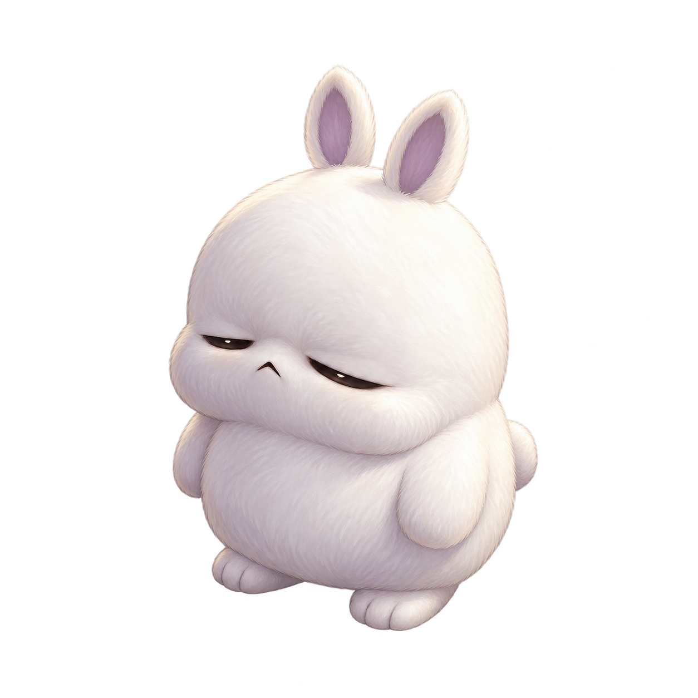
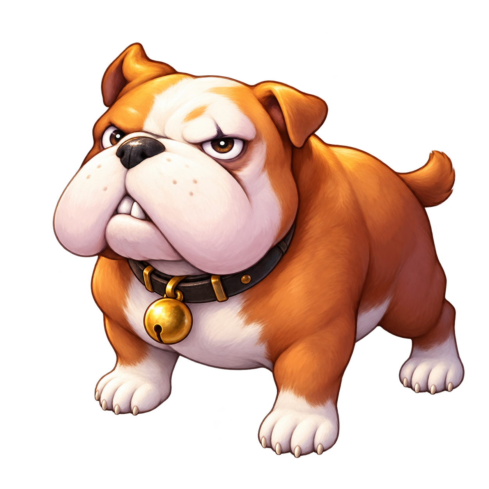
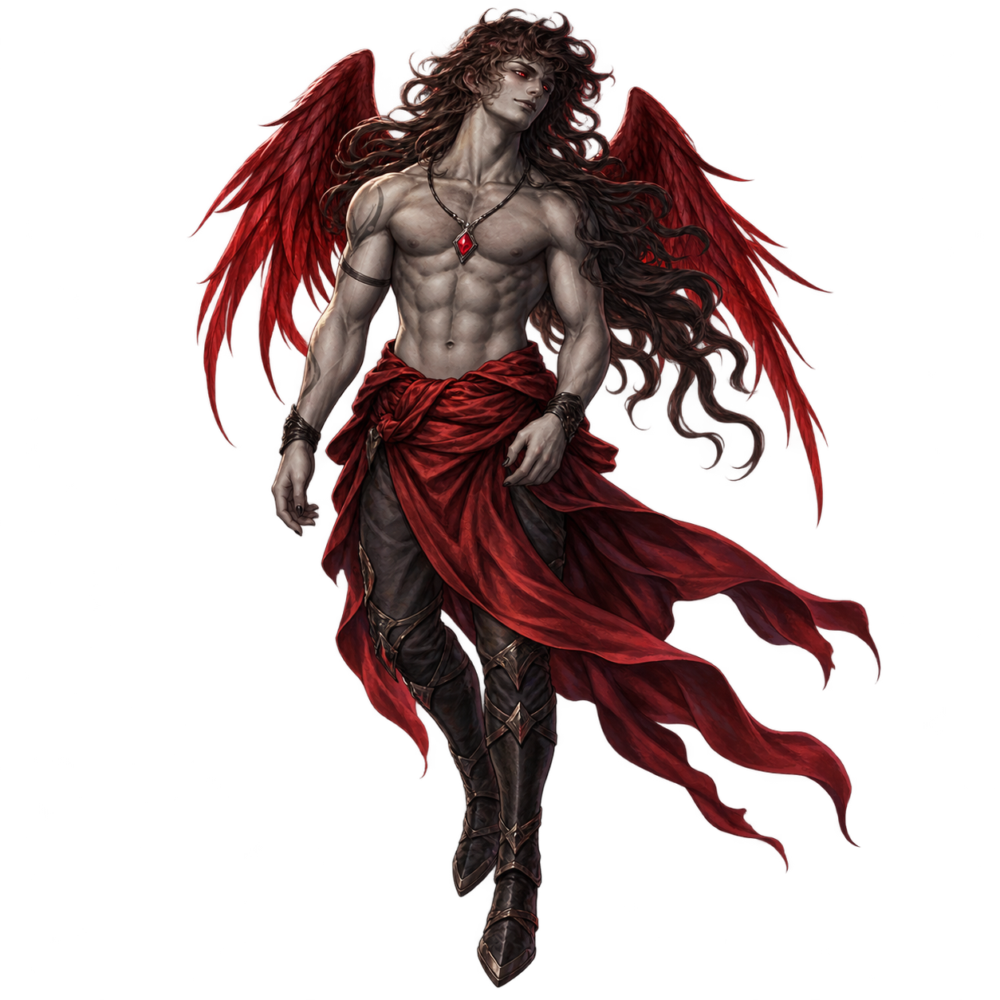

SOOPKETMON · PET CONCEPTS / 01
펫 3종 · 1차 시안
첨부한 레트로 RPG 펫과 붉은 날개 캐릭터를 참고한 전신 시안.
각각 배경 없는 PNG 원본으로 확인할 수 있습니다.





작은 크기에서도 확인128px 높이 영역에서의 전신 표현
SOOPKETMON · PET CONCEPTS / 01
첨부한 레트로 RPG 펫과 붉은 날개 캐릭터를 참고한 전신 시안.
각각 배경 없는 PNG 원본으로 확인할 수 있습니다.



작은 크기에서도 확인128px 높이 영역에서의 전신 표현